Home / Collectie
De digitale catalogus
De collectie
Zoek een stuk of filter op categorie. Klik op een kaart voor foto’s en uitleg.


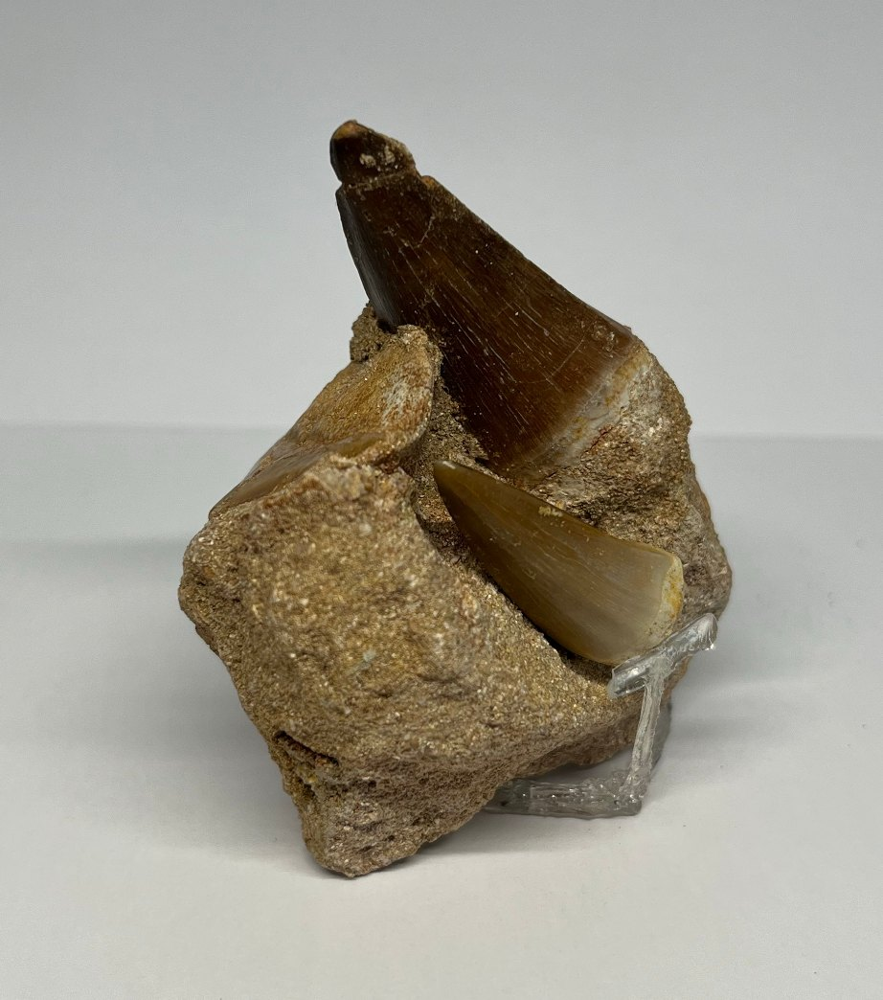
Fossielen
Mosasaurustand in matrix
Een krachtige tand nog in het fosfaatgesteente van Oued Zem, Marokko.

Fossielen
Losse mosasaurustand
Een kegelvormige tand met glanzend glazuur, uit de fosfaatlagen van Oued Zem.


Fossielen
Trilobiet uit het Atlasgebergte
Een gesegmenteerd pantser van een van de oudste geleedpotigen.

Fossielen
Varen in steen
Pecopteris polymorpha uit Graissessac: een blad van een boomvaren uit het Carboon.
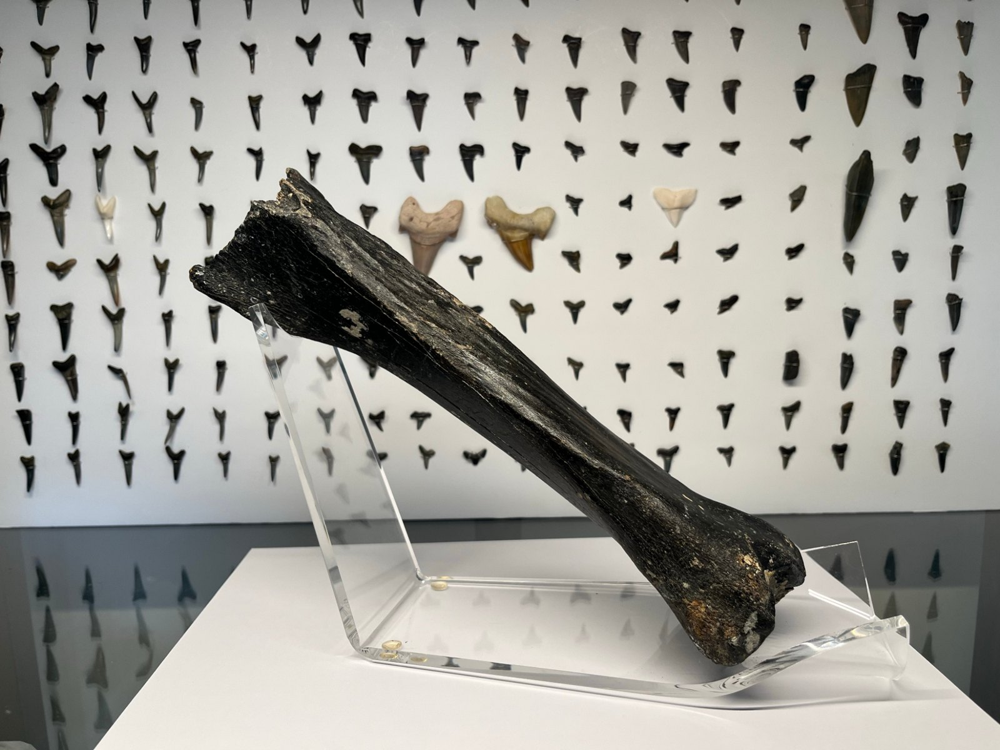
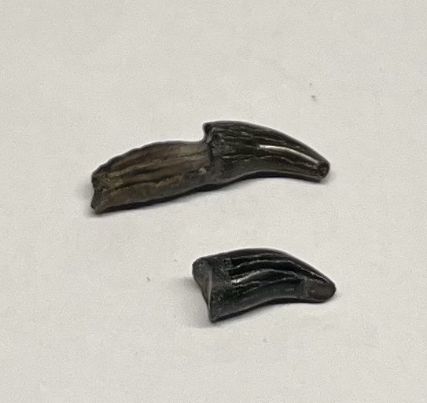
Fossielen
Twee kleine gestreepte tandjes
Twee gebogen tandjes met duidelijke lengteribbels. Een raadsel om op te lossen.


Natuurhistorie
Schedel van een hermelijn
Een klein, licht schedeltje van een felle jager, zelf gevonden in Lubbeek.


Natuurhistorie
Struisvogelei
Het grootste ei van alle levende vogels — en een verre herinnering aan de dinosaurussen.
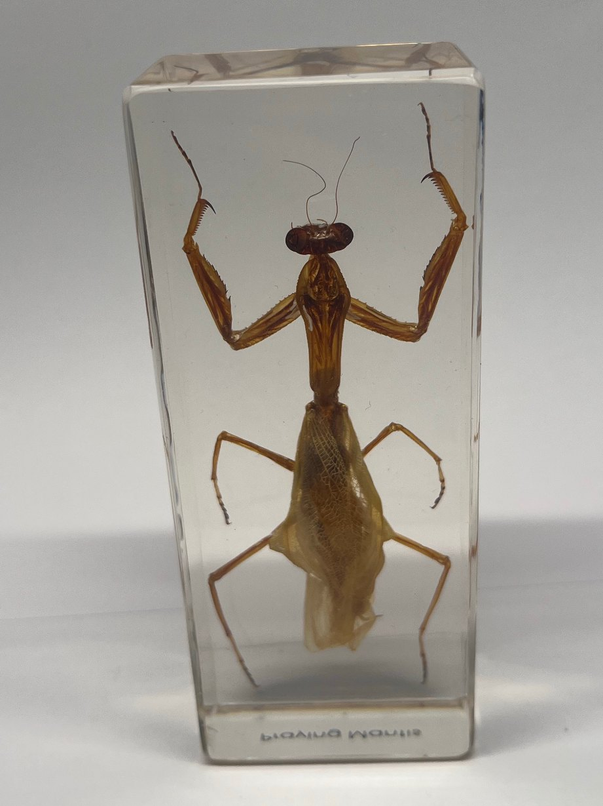
Natuurhistorie
Bidsprinkhaan in hars
Een geduldige jager met vangpoten, ingegoten in een blok kunsthars.
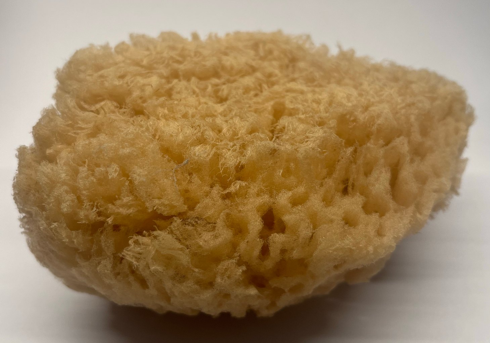
Natuurhistorie
Natuurlijke zeespons
Het skelet van een van de eenvoudigste en oudste dieren op aarde.

Natuurhistorie
Schedel van een jonge nijlkrokodil
Een lichte schedel met rijen puntige tandjes, van een jonge nijlkrokodil.

Natuurhistorie
Reuzenmorpho
Morpho didius: een van de grootste blauwe vlinders ter wereld, onder een glazen stolp.
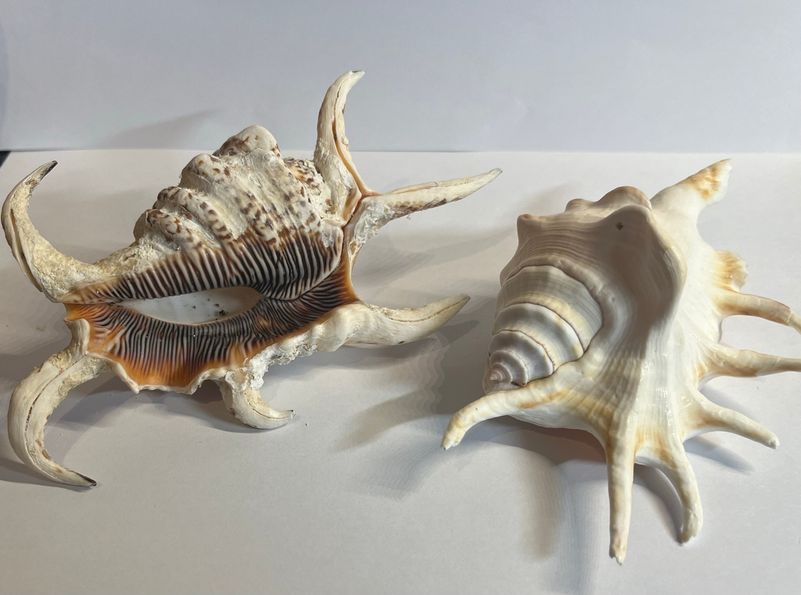
Natuurhistorie
Spinhoornschelpen
Twee grote zeeslakken met lange “vingers”: de schorpioenspinhoorn en de gewone spinhoorn.

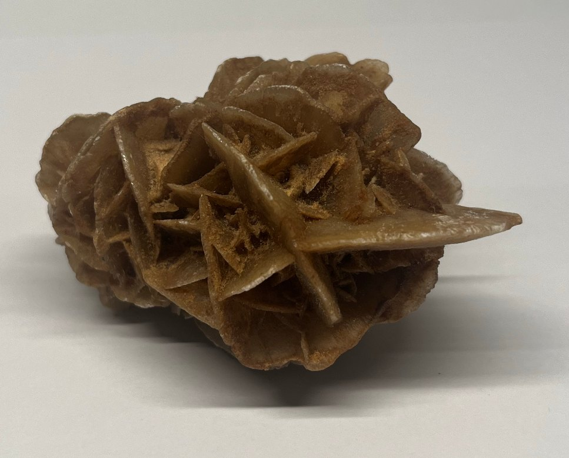
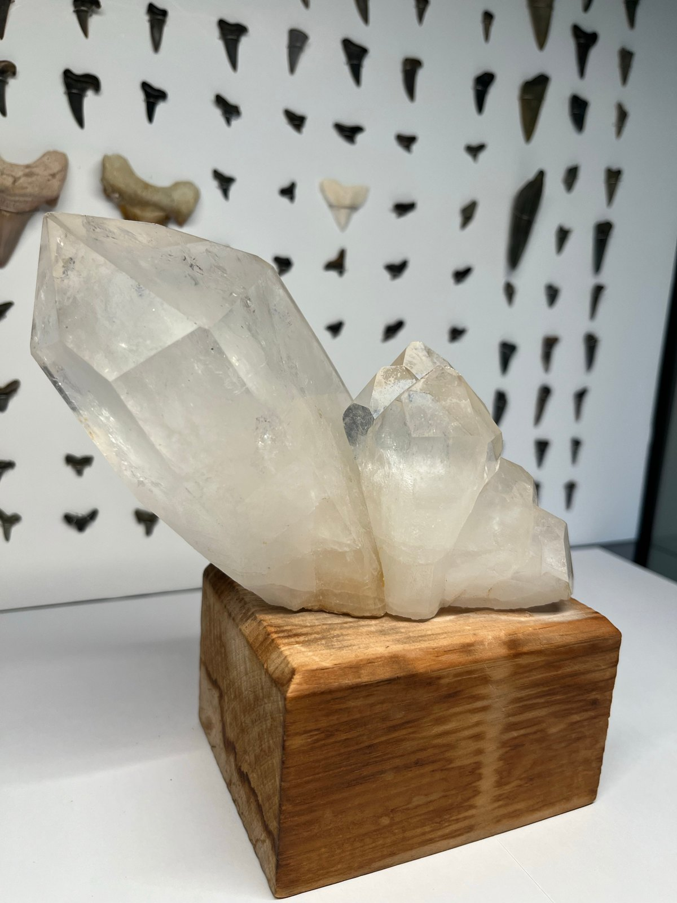

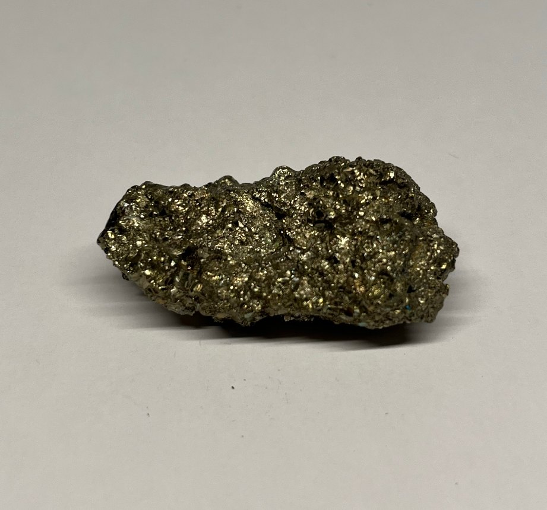

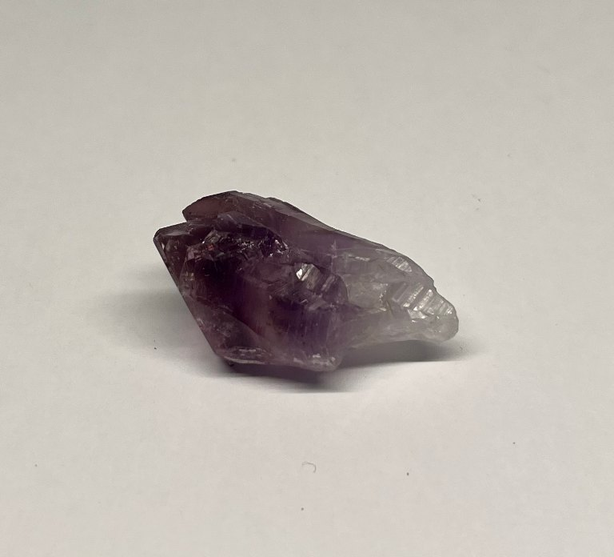
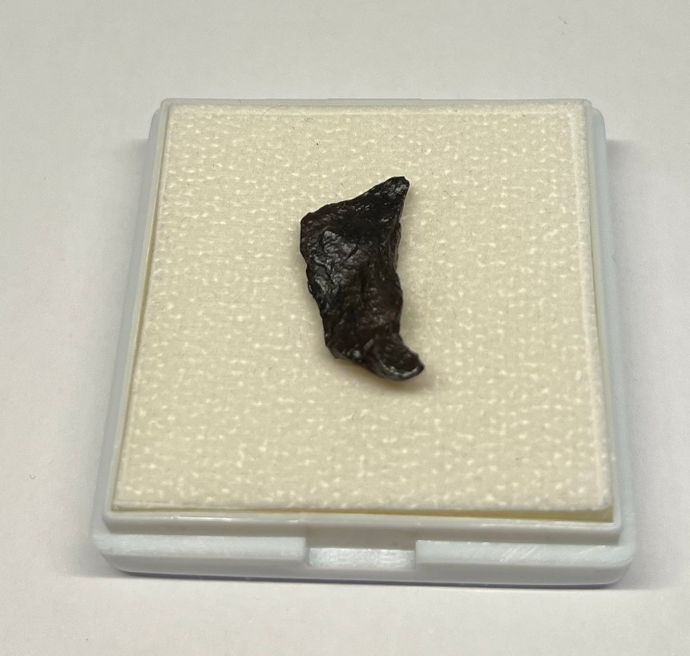
Ruimte
Agoudal-meteoriet
Een stukje ijzer-nikkel van een uiteengevallen planetoïde, gevonden in het Hoge Atlasgebergte van Marokko.